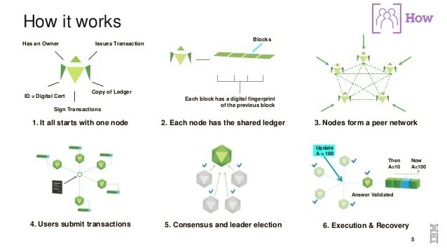

Blockchain. Technologie, die unsere Lebensweise verändert hat.
Smart Contracts. Dinge, die wir uns gestern nicht vorstellen konnten, sind heute alltäglich.
Security. Neues Maß an Sicherheit durch die Verteilung.
Blockchain erklärt
Bevor ich auf die Möglichkeiten eingehe, wie Unternehmen die Blockchain-Technologie in ihre Projekte einbinden können, lohnt es sich, einen Moment darauf einzugehen, wie genau Blockchain funktioniert.
Stellen Sie sich ein digitales Hauptbuch vor, das vollständig aus Blöcken besteht. Diese Blöcke sind miteinander verbunden und bilden eine Kette. Jedes Mal, wenn jemand eine Transaktion durchführen und somit Informationen zur Blockchain hinzufügen möchte, muss er einen völlig neuen Block hinzufügen.
Sobald ein neuer Block erstellt wurde, wird er an das Ende der Kette angehängt und bildet eine ununterbrochene Aufzeichnung von Blocktransaktionen, die bis zum allerersten Block zurückreicht, der jemals erstellt wurde.
Im Gegensatz zu der Art und Weise, wie die meisten Daten geschrieben und dann von herkömmlichen digitalen Ledgern überschrieben werden, besteht der Vorteil eines solchen Systems darin, dass eine vollständige Aufzeichnung der Transaktionen für alle sichtbar ist.
Die wachsenden Investitionen in die Blockchain
Sie fragen sich wahrscheinlich, wie Unternehmen auf der ganzen Welt die Blockchain betrachten und ob sie in sie investieren, nicht wahr? Nun, Unternehmen investieren tatsächlich in großem Stil in Blockchain!
Ein Bericht von MarketsandMarkets schätzt, dass die weltweiten Ausgaben für diese Technologie von 1,2 Milliarden US-Dollar im Jahr 2018 auf 23,3 Milliarden US-Dollar im Jahr 2023 steigen werden. Dies entspricht einer beeindruckenden CAGR von 80,2 % im Zeitraum von 2018 bis 2023.
Dieses Wachstum wird von Wachstumsbereichen angetrieben, von denen ein Bericht von Grand View Research einige Schlüsselbereiche nennt. Einige Beispiele sind die folgenden:
- Integration der Blockchain in das Lieferkettenmanagement;
- Integration von Blockchain und IoT;
- Integration von Blockchain mit ERP;
- Regierungen nutzen Blockchain für eine effizientere Leistungserbringung;
- Organisationen des Gesundheitswesens nutzen Blockchain, um ihre Patientenzentrierung zu verbessern.
Viele Unternehmen setzen auf Blockchain, und auch Sie könnten davon profitieren!
Wie man die Blockchain-Technologie implementiert
Die bekannteste Anwendung der Blockchain-Technologie ist die Kryptowährung. Tatsächlich wurde die Blockchain von dem inzwischen legendären Satoshi Nakamoto erfunden, um die Schaffung der ersten Kryptowährung der Welt - Bitcoin - zu ermöglichen.
Satoshi erfand das Blockchain-Prinzip, um das Problem zu lösen, das allen digitalen Währungen im Wege stand, nämlich das Problem der "doppelten Ausgaben". In allen bisherigen Systemen konnten digitale Währungen dupliziert werden, wodurch es theoretisch möglich war, ein und dieselbe Münze mehr als einmal auszugeben.
Indem das Netzwerk dezentralisiert wird und stattdessen von mehreren Knoten kontrolliert und gewartet werden kann, die sich nicht einmal im selben geografischen Gebiet befinden, hat Blockchain endlich eine praktikable Lösung für dieses Problem gefunden.
Anwendung 1: Integration von Kryptowährungstransaktionen
Ich habe kürzlich einen Artikel geschrieben, in dem ich die "10 besten Bitcoin-Zahlungsgateways für 2020" vorstelle. In diesem Artikel habe ich die Vorteile von Unternehmen hervorgehoben, die es ihren Kunden ermöglichen, in Bitcoin und anderen Altcoins zu bezahlen.
Jede Anwendung oder Website, die entweder Produkte verkauft, Mitgliedschafts- oder Abonnementgebühren erhebt, Spenden annimmt oder irgendeine andere Art von Zahlung vornimmt, kann durch die Integration eines Kryptowährungs-Zahlungsgateways enorm profitieren.
Wenn Sie Ihre neue App mit einer Bitcoin-API ausstatten, können Sie nicht nur die Einnahmen steigern, indem Sie all diejenigen anlocken, die gerne in Bitcoin zahlen, sondern auch Ihrem Unternehmen helfen, Geld zu sparen, da die meisten Transaktionsgebühren für Zahlungsgateways niedriger sind als die Kreditkartengebühren der Banken usw.
Da Kryptowährungen wie Bitcoin anonyme Transaktionen ermöglichen, bezeichnen Regierungen und Geschäftsführer aller Branchen, die von diesen digitalen Währungen bedroht werden, Bitcoin gerne als etwas, das nur für Drogenhändler gut ist. Das ist einfach nicht wahr.
Viele Unternehmen, darunter auch solche, die diskrete Dienstleistungen wie zum Beispiel Spielzeug für Erwachsene anbieten, sehen große Vorteile darin, ihren Kunden die Bezahlung in Kryptowährung zu ermöglichen.
Da die meisten Menschen nicht wollen, dass solche Transaktionen auf ihren monatlichen Kreditkartenabrechnungen erscheinen, werden Kryptowährungen oft als willkommene Zahlungsmethode angesehen.
Anwendung 2: Smart Contracts
Die Verwendung von intelligenten Verträgen, wie sie von Organisationen wie dem Ethereum-Projekt befürwortet werden, bietet Unternehmen Zugang zu einer enormen Bandbreite von Werkzeugen zur Verbesserung ihrer Projekte. Intelligente Verträge ermöglichen es, rechtsverbindliche Vereinbarungen zwischen zwei oder mehreren Parteien zu treffen.
Diese Verträge ermöglichen ein weitaus höheres Maß an Anonymität und machen eine dritte Partei, wie z. B. einen Rechtsanwalt, überflüssig, die bei der Durchführung der Transaktion behilflich ist.
Eine Liste von Erfüllungskriterien kann in den Vertrag aufgenommen werden, und sobald diese erfüllt sind, wird der Vertrag automatisch eine Reihe von Maßnahmen einleiten, ohne dass dies manuell geschehen muss. Die Aktionen können von der Auslösung einer Zahlung bis zur Validierung von Heiratsdokumenten usw. reichen.
Intelligente Verträge können zur Erleichterung einer großen Anzahl verschiedener Transaktionen eingesetzt werden. Sie werden es ermöglichen, viele Prozesse, die Institutionen vom Finanzsektor bis zur medizinischen Forschung betreffen, durch Automatisierung zu rationalisieren.
Aus diesem Grund steht die Entwicklung von Smart Contracts heute im Fokus vieler führender Blockchain-Entwickler.
Entwicklerteams arbeiten mit Hochdruck an der Entwicklung von Smart Contracts in Solidity, einer Sprache, die für die Zusammenarbeit mit der Ethereum Virtual Machine (EVM) konzipiert ist, um Lösungen für spezifische Branchenanforderungen zu finden.
Das Tolle an intelligenten Verträgen ist, dass das Ethereum-Projekt einen Großteil der harten Arbeit bereits erledigt hat. Das bedeutet, dass auch kleine und mittelständische Unternehmen damit beginnen können, Blockchain-basierte Smart Contracts in ihre Projekte zu implementieren, ohne dass sie große Entwicklungsteams beschäftigen müssen.
Da die Ethereum-Plattform die Ausführung von intelligenten Verträgen auf ihrer Plattform zulässt, müssen die Unternehmen auch kein Blockchain-Netzwerk einrichten. Dies bedeutet, dass Unternehmen ihre intelligenten Verträge starten können, sobald sie bereit sind.
Anwendung 3: Integration von intelligenten Geräten mit IoT
Ein weiterer interessanter Weg, den viele Unternehmen derzeit im Hinblick auf die Integration der Blockchain in ihre Projekte erkunden, ist die Sicherung von IoT-Netzwerken. Das IoT ermöglicht die Verbindung von Netzwerken intelligenter Geräte, damit die Nutzer von dieser Verbindung profitieren können.
Die meisten von uns nutzen das IoT bereits, da es für einen Großteil der Prozesse eingesetzt wird, die es unseren Smartphones ermöglichen, andere Geräte, wie z. B. unsere Fernseher, zu steuern.
Jedes Mal, wenn Sie Ihr Telefon mit einem externen Lautsprecher synchronisieren, profitieren Sie von den Vorteilen eines IoT-Netzwerks. Und das ist nur das einfachste Beispiel.
Das Internet der Dinge kann komplexe intelligente Häuser ermöglichen, Transaktionen in Lieferketten vollständig automatisieren und eines Tages sogar das Leben in den Raumschiffen, die wir für Reisen zum Mars nutzen, vollständig automatisieren.
Um ein besseres Bild davon zu vermitteln, wie die Blockchain-Technologie in bestehende/zukünftige Projekte implementiert werden kann, werde ich einen Blick darauf werfen, wie Blockchain-Lösungen dem Bankensektor zugute kommen werden.
Fallbeispiel: Blockchain-Implementierung für Banken
Banken sind komplexe Institutionen, die über zahlreiche Zweige oder Abteilungen verfügen, die es ihnen ermöglichen, in zahlreichen Finanzbereichen tätig zu sein.
Die Banken sind in der Lage, Kundendienste wie Kredite, Hypotheken usw. anzubieten und gleichzeitig Handelsfinanzierungen und andere derartige Aktivitäten durchzuführen.
Abgesehen von den viel diskutierten Anreizen für Banken, ihre eigenen Kryptowährungen zu schaffen, können sie von der Implementierung von Blockchain-Lösungen wie Smart Contracts und Blockchain-basierten IoT-Netzwerken enorm profitieren.
Intelligente Verträge könnten dazu beitragen, viele ihrer wichtigsten Prozesse zu automatisieren. Ein solches Beispiel sind Hypotheken. Wenn ein Kunde eine Immobilie gefunden hat, die er kaufen möchte, könnte er sich an die Bank wenden, die dann einen intelligenten Vertrag aufsetzen würde.
Da die Bank bereits über die gesamte Kontohistorie des Kunden verfügt, würde der intelligente Vertrag in einem ersten Schritt die Eignung des Kunden für die gewünschte Hypothek feststellen. Sobald dies geschehen ist, könnte der Vertrag dann eine Zahlung an den Verkäufer der Immobilie veranlassen.
Dies wiederum würde die Übertragung der Urkunden auf den Käufer und die Aktivierung der automatischen Hypothekenrückzahlung vom Konto des Käufers einleiten.
Diese würden so lange fortgesetzt, bis die Hypothek vollständig zurückgezahlt ist. Zu diesem Zeitpunkt würde der intelligente Vertrag die Rückzahlungen deaktivieren und den Vertrag beenden.
Durch die Automatisierung dieses Prozesses könnten die Banken jedes Jahr mehrere 10 Millionen Dollar einsparen, da weniger Verwaltungspersonal für die manuelle Bearbeitung solcher Transaktionen benötigt wird. Intelligente Verträge würden auch das Risiko von Fehlern und Betrug verringern.
Anwendung 4: Blockchain-basierter ID-Schutz
In einem kürzlich erschienenen Artikel mit dem Titel "Wie lässt sich Blockchain im Identitätsmanagement einsetzen?" habe ich festgestellt, dass Identitätsmanagement-Software immer wichtiger wird, da "die Globalisierung den Bedarf an einer bereichs- und länderübergreifenden Serviceintegration erhöht."
Mit einer Blockchain-basierten ID-Lösung können Sie nicht nur die Sicherheit Ihrer App gewährleisten, sondern auch Ihren Kunden die Gewissheit geben, dass sie bei der Nutzung Ihres Produkts in sicheren Händen sind.
Auch wenn es nicht so aussieht, als wäre dies heute ein wichtiges Verkaufsargument, so hat doch die massive Zunahme von Datenschutzverletzungen wie die von Facebook im September 2018, bei der 50 Millionen Nutzerkonten kompromittiert wurden (was zu einigen der ersten Klagen führte, bei denen die Nutzer das Recht erhielten, das Unternehmen auf bessere Sicherheit zu verklagen), zu einem erhöhten Bewusstsein für die lebenswichtige Notwendigkeit der ID-Sicherheit geführt.
Unabhängig davon, ob Sie die Ressourcen haben, um Ihre eigene Blockchain-basierte ID-Sicherheitslösung von Grund auf zu entwickeln, oder ob Sie sich einfach für die Integration einer bestehenden Blockchain-ID-Lösung wie Validated ID entscheiden, wird Ihnen das Angebot einer solchen sicheren Lösung sicherlich helfen, sich von der Konkurrenz abzuheben.
Integration der Blockchain-Technologie: Der Schlüssel zum Erfolg liegt in der Planung
Da es sich bei der Blockchain um eine Nischentechnologie handelt, rechnen Sie sicher mit einem komplexen Projekt, wenn Sie versuchen, sie in Ihr Unternehmen zu integrieren, nicht wahr? Sie sollten ein solches Projekt akribisch planen.
Bei dieser Planung sind mehrere Aspekte zu berücksichtigen, z. B:
- Sollten Sie einen Krypto-Token auf den Markt bringen oder können Sie Ihre geplante Funktionalität auch ohne einen solchen bereitstellen?
- Erfüllt ein öffentliches Blockchain-Netzwerk Ihren Zweck? Nun, wenn Sie die Teilnehmer auf vertrauenswürdige Parteien beschränken müssen, ist eine öffentliche Blockchain für Sie nicht geeignet. Sie eignet sich auch nicht, wenn Sie sensible Daten verarbeiten und eine hohe Skalierbarkeit benötigen. Für solche Anwendungsfälle sollten Sie eine Unternehmens-Blockchain in Betracht ziehen, wie ich in "Vergleich zwischen öffentlicher und privater (genehmigter) Blockchain" erläutert habe.
- Wenn Sie eine Unternehmens-Blockchain verwenden, bauen Sie sie von Grund auf neu auf? Das wird Sie viel Zeit und Energie kosten. Daher empfehle ich Ihnen, eines der gängigen Blockchain-Frameworks für Unternehmen zu verwenden. Hyperledger Fabric ist ein ausgereiftes Framework, das zudem branchenunabhängig ist. Sie können damit eine erlaubte und skalierbare Blockchain aufbauen, in der Ihre sensiblen Daten sicher sind, wie unser Leitfaden "Vor- und Nachteile von Hyperledger Fabric für Blockchain-Netzwerke" erklärt.
- Wie werden Sie Ihr Blockchain-Netzwerk hosten? Nun, Sie haben mehrere Möglichkeiten, aber Sie müssen diejenige auswählen, die für Sie geeignet ist.
Zusammenstellung des richtigen Entwicklungsteams
Der Schlüssel zur erfolgreichen Implementierung einer Blockchain-Technologie in Ihr Projekt ist das richtige Team dafür. Zu viele Manager machen den Fehler, Projekte einfach auf ihre bestehenden Entwicklungsteams abzuwälzen, ohne die Konsequenzen zu bedenken.
Wie ich bereits erwähnt habe, ist Blockchain eine relativ neue Technologie, die im Vergleich zu anderen Arten der Softwareentwicklung besondere Fähigkeiten erfordert.
Jeder Entwickler, der an der Blockchain arbeitet, muss mit Dingen wie Kryptografie, der Funktionsweise dezentraler Peer-to-Peer-Netzwerke, Organisationen wie Ethereum und deren Smart Contracts usw. vertraut sein.
Aus diesem Grund sollte jedes Team mindestens einen erfahrenen Blockchain-Entwickler sowie Entwickler umfassen, die über die Fähigkeiten und die Leidenschaft für die Blockchain-Entwicklung verfügen.
Jedes Team, das mit intelligenten Verträgen arbeitet, sollte programmieren können, mit Blockchain-APIs und den aktuellen Plattformen vertraut sein, die von Blockchain-Unternehmen zur Unterstützung der Entwicklung angeboten werden, usw.
Ein guter Blockchain-Entwickler kennt Plattformen wie BigchainDB, die die Skalierbarkeitsprobleme der Blockchain lösen soll, und Hyperledger, eine Plattform, die die einfache Erstellung privater Blockchains ermöglicht, die nur mit Genehmigung zugänglich sind, und so weiter und so fort.
Ein weiterer interessanter Bereich ist die Cloud-basierte Blockchain-Entwicklung. Unternehmen wie IBM, Amazon und Microsoft bieten jetzt Entwicklungsräume auf ihren Cloud-Plattformen an.
Dieser als Blockchain as a Service (BaaS) bekannte Dienst bringt Unternehmen und Entwickler zusammen, um praktikable Blockchain-Lösungen für ihre speziellen Geschäftsanforderungen zu entwickeln.
Die Nutzung solcher Plattformen kann Unternehmen helfen, Geld zu sparen und ihre Blockchain-Projekte in viel kürzerer Zeit zum Laufen zu bringen.
Projekte wie Unibright versprechen den Unternehmen nun, dass sie Entwickler vollständig umgehen können, da sie keine Programmierung erfordern. Allerdings sind solche Frameworks noch weit davon entfernt, effektive Lösungen für komplexere Projekte zu bieten.
Aus diesem Grund empfehle ich dringend, ein Entwicklungsteam zu engagieren, das sich mit der Blockchain-Einführung auskennt. Ein gutes Entwicklungsteam ist zwar im Vorfeld etwas teurer, spart aber oft Zeit und Geld, da das Risiko von Problemen stark reduziert wird.
Überprüfung intelligenter Verträge unter Einbeziehung der Blockchain-Technologie
Ich habe bereits erklärt, wie leistungsfähig intelligente Verträge sind, aber sie bergen auch ein großes Risiko. Sie können Smart Contracts nicht mehr ändern, nachdem Sie sie eingesetzt haben. Fehlerhafte Smart Contracts können sich nachteilig auf Ihren Betrieb auswirken, und Sie werden es schwer haben, diese Auswirkungen rückgängig zu machen.
Natürlich sollten Sie sie gründlich testen. Aber wie Sie wissen, werden durch das Testen nicht alle verborgenen Fehler aufgedeckt. Sie sollten intelligente Verträge gründlich überprüfen, und diese Übung sollte Folgendes beinhalten:
- Eine statische Code-Analyse;
- Eine Analyse der Codequalität;
- Identifizierung der wichtigsten Schwachstellen wie Wiederholung, Abschattung von Variablen, Überläufe, Unterläufe, fehlerhafte kryptografische Signaturvalidierung usw.
- Eine Analyse, ob die intelligenten Verträge die gewünschten Funktionen bieten würden.
Blockchain-Kenntnisse sind schwer zu finden, daher könnte es für Sie noch schwieriger sein, kompetente Prüfer für intelligente Verträge an Bord zu holen! Doch Hilfe ist in Sicht!
Letzter Gedanke
In diesem sehr kurzen Artikel konnte ich dieses faszinierende Thema zwar nur kurz anreißen, aber ich hoffe, dass er Ihnen eine Vorstellung davon vermittelt, wie Sie die Blockchain-Technologie in Ihr Projekt integrieren können.
Tatsache ist, dass die meisten Unternehmen Prozesse haben, die von der zusätzlichen Sicherheit und Automatisierung profitieren könnten, die Blockchain-Lösungen bieten.
Es könnte noch etwas dauern, bis Blockchain-Lösungen von der Stange kommerziell verfügbar sind, so dass die Unternehmen, die jetzt vorankommen wollen, den Prozess der Entwicklung und Implementierung selbst in die Hand nehmen müssen.
Wie bereits im letzten Kapitel erwähnt, können Unternehmen den gesamten Prozess der Implementierung von Blockchain-Lösungen vereinfachen, indem sie sicherstellen, dass sie das bestmögliche Entwicklungsteam für sich arbeiten lassen. Schließlich sind die Entwickler ein wesentlicher Schlüssel zum Erfolg Ihres Projekts.
Häufig gestellte Fragen
Was ist eine Blockchain-Implementierung?
Wie einfach ist die Implementierung der Blockchain?
Wo findet man Blockchain-Entwickler?
Testimonials
Dieser Artikel hat die Art und Weise verändert, wie wir unseren Kunden die richtige Technologie vorschlagen.
Bitcoin ist der Weg zum Erfolg!
> Satoshi Nakamoto
We used to dream about this stuff. Now, we get to build it. It's pretty neat.
> Steve Jobs